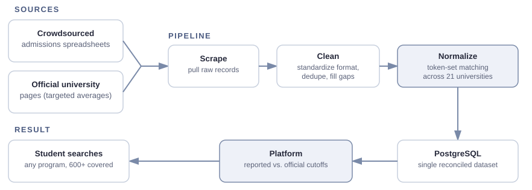
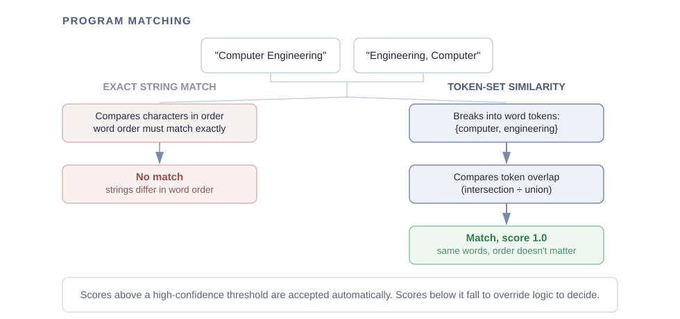
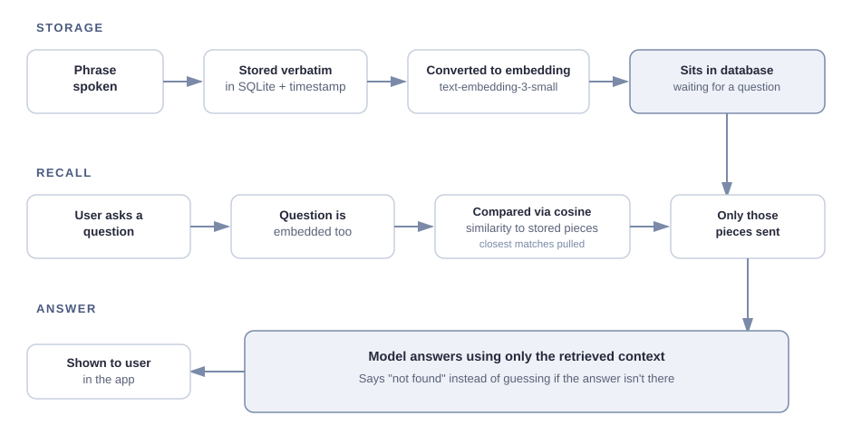
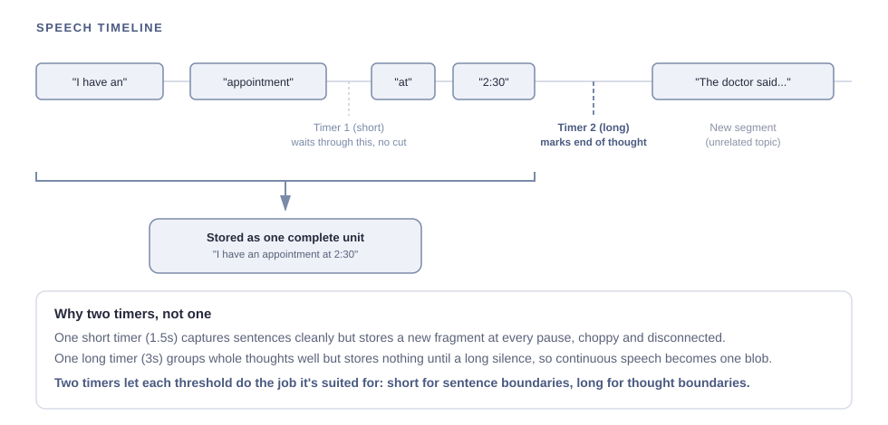

People with Alzheimer’s lose conversational details, and recall has to stay accurate and cheap even as history grows unbounded.
Built
A simple, senior-friendly web app backed by a RAG pipeline over live speech-to-text, using OpenAI embeddings, cosine-similarity search, and gpt-4o-mini to answer.
Outcome
94% answer accuracy, using only what was actually said. Peer-voted 1st of 78 nominees at the York Region Science and Technology Fair (Cournoyea/Paz-Soldan Award).
Stack
Python, Flask, Socket.IO, Google Web Speech API, OpenAI embeddings + gpt-4o-mini, NumPy, SQLite
High school students applying to Ontario universities have almost no reliable way to know what grades actually get someone into a program.
Crowdsourced Reddit spreadsheets are the best available resource, but entries are often missing a program code or name, making it hard to search and get accurate results, with no historical view or fast way to compare across programs or years.
University pages publish their own estimated minimum cutoffs, but these don’t always reflect what students are actually getting in with.
Students are left manually cross-referencing scattered spreadsheets and official pages just to guess their odds.
Approach
The underlying data was sourced from two places: crowdsourced admissions spreadsheets, which track real self-reported admission results and feed the core data and visualizations, and official university pages, which publish targeted averages representing each program’s estimated minimum cutoff. These served as a benchmark, allowing the platform to show how far official estimates were from actual admitted grades. Both sources came in inconsistent formats with no shared structure across schools or years. Before any analytics could be built, this raw data had to be reconciled into a single consistent dataset and cross-referenced, so the platform could show reported admission averages alongside official published ranges.
The pipeline runs in three stages, scrape, clean, and normalize:

Key Challenge: Program Matching Accuracy
The hardest problem was matching the data correctly. The same program could appear under different names depending on the source:
Flipped word order (e.g. “Computer Engineering” vs. “Engineering, Computer”)
Abbreviations or added specializations
Inconsistent formatting
Missing codes, missing names, or misspellings
An exact string match against a canonical program list only worked about 75% of the time, dropping or mismatching a quarter of the data.
To fix this, program and university names were normalized and broken into word tokens, then matched using token-set similarity.

This process raised match accuracy from 75% to 95%.
Outcome
10,000+users total
1,500+users in the first 24 hours
600+programs tracked
21universities
The platform launched on Reddit and quickly gained traction among students researching admissions. Feedback highlighted a limitation: since the data is self-reported, students with higher grades are more likely to post their results, which can skew average admitted grades higher than reality. This is a known bias in crowdsourced admissions data, and future versions could address it by weighting or flagging self-reported entries differently from verified sources.
Personal Takeaways
First live deploy
Learned to ship to the real public and keep it reliable, not just demo-ready.
Users shape products
Users surfaced issues I’d missed, like self-reporting bias, and kept me iterating.
Solved a problem I had
Built the admissions tool I’d wished for in high school, which hooked me on fixing problems.
— end —
Case study · science fair prototype, rebuilt
ConvoSpark AI
An AI conversational tool that helps people with Alzheimer’s recall details from past conversations.
Award Peer-voted 1st of 78 nominees, YRSTF (Cournoyea/Paz-Soldan)Stack Python, Flask, Socket.IO, Google Web Speech API, OpenAI embeddings + gpt-4o-mini, NumPy, SQLite
People with Alzheimer’s often lose track of a conversation within minutes: appointment times, who visited, what was said. Notebooks and reminder apps don’t help much, since they require the user to remember to write things down and remember to look them up later. We wanted a tool that needed neither: something that listens to a conversation and lets the person or their caregiver ask about it afterward in plain language.
This created two problems at once. Usability had to work for seniors with little tech experience, so the interface needed large text, few buttons, and nothing to configure. Accuracy had to be higher than usual, since a confident wrong answer, like an invented appointment time, is worse than no answer in a memory-care setting.
Note: this was built as a science fair prototype and tested with volunteer users, not deployed to real patients. You can also think of it as an automatic note-taker you can talk to that doesn’t interfere with your conversation, though that wasn’t the original intent.
Initial Approach
The app had three core responsibilities:
Listen: a Flask and Socket.IO backend streams microphone audio through the Google Web Speech API, transcribing live and pushing updates to the browser over websocket.
Understand: OpenAI GPT models turn the conversation into short, readable notes shown on screen during the session.
Recall: a separate page lets the user ask a question and get an answer based on what was actually said.
The interface stayed deliberately simple: a large transcript panel, a few clearly labelled buttons, nothing to configure. In testing with volunteer users, this version retrieved key details from past conversations with 94% accuracy.
Idea Evolution
The original award-winning version proved the concept, but its recall logic was severely limited. It kept the full conversation in memory, and for every question, sent the entire history to the model to search through. That works in a demo, but not as a product: data is lost on restart, it eventually exceeds the model’s input limit, and it gets slower, costlier, and less accurate the more someone talks.
After the competition, I rebuilt the recall engine as a Retrieval-Augmented Generation (RAG) pipeline:

This keeps answers more accurate and keeps cost roughly constant no matter how large the history gets.
Key Challenge: Reliable Speech Recall
The central challenge in the rebuild was turning live speech into something the app could answer questions about accurately later.
Listening and storing. Natural speech comes in bursts with pauses, and elderly or hesitant speakers pause a lot. Storing whatever the speech recognizer returned produced short, broken fragments that meant nothing on their own. To fix this, a two-timer system was used to group speech into complete units:

Two timers do two jobs. The short one (~1.5s) marks the end of a phrase so the audio gets transcribed in small clips, which the speech API handles more accurately, and a failed clip only loses one phrase instead of a whole thought. The long one waits for real silence in the room; once it’s quiet long enough, the thought is done and the phrases since the last pause get joined into one stored unit.
One timer alone doesn’t work: only-long makes clips too big for the API, only-short never knows when a thought ends. Together they give short, reliable clips stitched into one complete, searchable thought.
Recalling. The original in-memory approach broke down as history grew. Rebuilding recall as a retrieval step, shown in the diagram in Idea Evolution, meant only the most relevant stored pieces are pulled for any given question, keeping answers accurate regardless of how much has been said.
Outcome
94%recall accuracy
1stin the peer vote, of 78 nominees at YRSTF (Cournoyea/Paz-Soldan Award)
Beyond the numbers, it delivered a working real-time app usable by non-technical seniors. After the competition, the recall system was rebuilt into an embedding-based RAG pipeline that stays accurate and affordable as history grows, with added error handling and session summaries.
Possible next steps:
Per-user accounts with private histories.
Extending the idea into an in-meeting notetaker or general conversation recall tool.
Personal Takeaways
Human factors first
Designing for seniors with Alzheimer’s taught me to think deeply about the intention behind every aesthetic choice.
Prototype vs production
Winning proved the idea, but the recall logic wouldn’t survive real use. Rebuilding it taught me the difference between a good idea and a good product.
Back with new skills
Returning after three years, I could finally fix what the original couldn’t, and saw how stepping away and coming back improves both skills and judgment.
 Rachael Chan
Rachael Chan
 Race Engineering Member2026@ UofT Formula Racing Team
Race Engineering Member2026@ UofT Formula Racing Team Data & Digital Launchpad Associate2026@ You’re Next Career Network
Data & Digital Launchpad Associate2026@ You’re Next Career Network